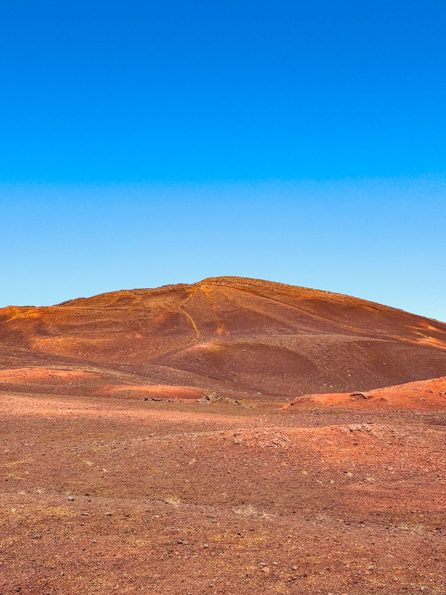

Field Study 01 · Landing-Site Assessment
The ellipse that moved

The Brief
Assess a proposed landing ellipse on an equatorial volcanic plain. The orbital case for the site looked strong: smooth at orbiter resolution, low slopes, scientifically rich. The team wanted confirmation and a hazard map — in that order, as teams usually do.
The Decisions
The mapping was done at the finest scale the data honestly supported, and two findings would not go away: a buried crater rim crossing the ellipse's centre, invisible in imaging but plain in the topography, and dust cover deeper than the thermal data alone had suggested — soft ground where the lander's footpads would meet it. The report recommended moving the ellipse 40 km, and printed the evidence at full strength rather than softening it for the meeting.
The Outcome
The programme accepted the move. It cost them a phase review slipped by one cycle and a season of replanned instrument targeting — told here because it is part of the price of the recommendation, and the client paid it with their eyes open. The alternative site verified clean on every dataset the team could bring to bear.
She told us the ellipse we loved was the wrong one, showed the working, and was right. It cost us a phase review. It would have cost us the landing.